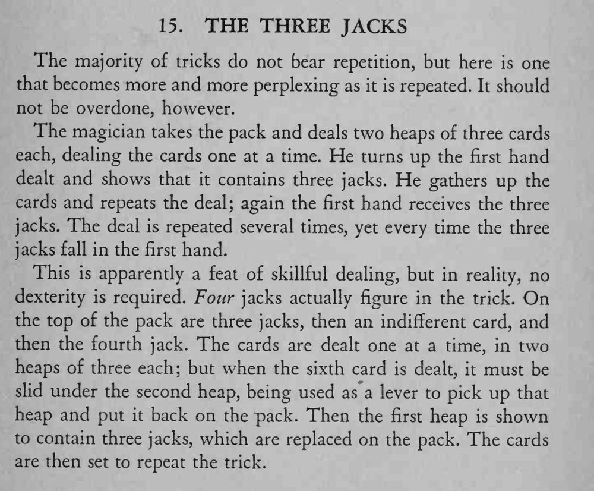

魔术师把牌一张张发成两叠三张，第一叠每次都是三张 J，连演几遍结果都一样。
每遍动作要保持一致，别因为太熟练而越做越快。

The majority of tricks do not bear repetition, but here is one that becomes more and more perplexing as it is repeated. It should not be overdone, however. The magician takes the pack and deals two heaps of three cards each, dealing the cards one at a time. He turns up the first hand dealt and shows that it contains three jacks. He gathers up the cards and repeats the deal; again the first hand receives the three jacks. The deal is repeated several times, yet every time the three jacks fall in the first hand. This is apparently a feat of skillful dealing, but in reality, no dexterity is required. Four jacks actually figure in the trick. On the top of the pack are three jacks, then an indifferent card, and then the fourth jack. The cards are dealt one at a time, in two heaps of three each; but when the sixth card is dealt, it must be slid under the second heap, being used as a lever to pick up that heap and put it back on the pack. Then the first heap is shown to contain three jacks, which are replaced on the pack. The cards are then set to repeat the trick.